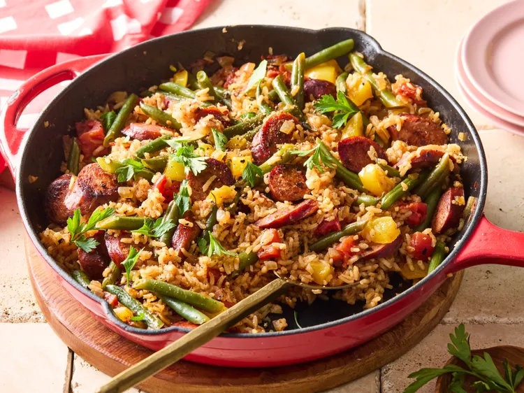

Home
Swamp Sausage and Rice

Description
This swamp sausage and rice brings bold, smoky flavors to an easy one-pan
dinner. Andouille sausage, rice, green beans, bell peppers, and
fire-roasted tomatoes cook together with Cajun seasoning for a hearty meal
with just the right kick. A satisfying dinner without a pile of dishes
Ingredients
- 1 tablespoon olive oil
-
1 (12- to 14-ounce) package andouille sausage, cut in 1/2-inch slices
- 1 cup chopped onion
- 1 cup chopped yellow bell pepper
- 3 cloves garlic, minced
- 1 to 2 teaspoons Cajun seasoning
- 1/2 teaspoon salt
- 1 cup long-grain white rice
- 8 ounces fresh green beans, cut in 2-inch pieces
- 2 cups reduced-sodium chicken broth
- 1 (14.5-ounce) can fire-roasted diced tomatoes
- chopped fresh parsley
Directions
-
Heat oil in a 12-inch skillet over medium. Add sausage and cook until
browned, 6 minutes. Remove sausage from the skillet with a slotted
spoon.
-
Add onion and bell pepper to the skillet. Cook and stir until tender, 6
minutes
-
Stir in garlic, Cajun seasoning, and salt. Cook and stir until fragrant,
about 1 minute. Stir in rice to coat
-
Add sausage, green beans, broth, and undrained tomatoes to the skillet.
Increase heat to medium-high and bring to a boil. Cover, reduce heat to
low, and simmer until rice is tender, about 20 minutes.
-
Remove from heat. Let stand 5 minutes. Fluff with a fork. Garnish with
parsley.